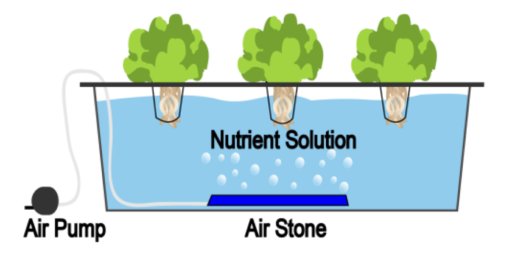
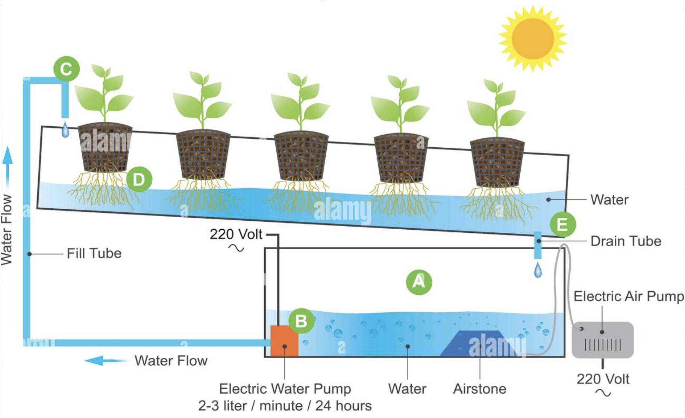
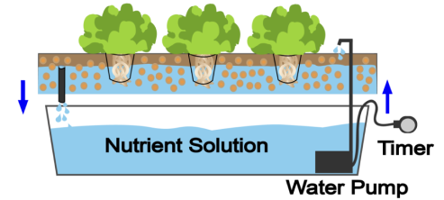
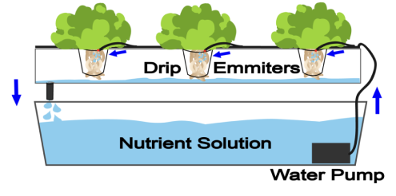
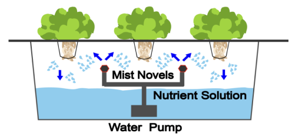

History
You might think that hydroponics is a relatively new method for growing plants– you’d be wrong!
- Gardeners have been growing plants in hydroponic gardens for at least 2600 years, possibly beginning with the legendary Hanging Gardens of Babylon built around 600 BC in Babylonia or Mesopotamia and situated along the Euphrates River.
- In the 10th and 11th centuries the Aztec people created floating gardens in Lake Tenochtitlan in Mexico. To create these floating gardens plants they took soil from the bottom of the lake – soil which was rich in nutrients.
- In the 1620s Sir Francis Bacon, a British scientist, philosopher and politician did research on soil-less gardening. His work, ‘Sylva Sylvarum’ published in 1627, started a wave of research into hydroponics.
- In 1699 the British scientist John Woodward mixed together water and soil to use as a root media – he was one of the first people to understand that plants absorb nutrients from soil and water.
- Throughout the 1850’s French scientist Jean Baptiste Boussingault carried out experiments with inert growing media. He was able to conclude that water was essential for plant growth by providing hydrogen.
- By the early 1900s scientists had analysed the minerals and other materials which are necessary for plant growth and had devised formulas for liquid nutrients that could be used instead of soil. Prior to 1925 most of the work was restricted to the laboratory.
- In 1924 Dr William F Gericke of the University of California created the word ‘hydroponics’ to describe crops growing in non-soil media and nutrient–enriched water indoors and outdoors. Gericke grew vegetables hydroponically – in fact he managed to grow tomatoes to heights of 7mt.
- In 1938 Berkeley scientists Dennis Hoagland and Daniel Arnon published ‘The Water Culture Method for Growing Plants without Soil’. This is widely considered to be one of the most important texts ever published about hydroponics.
- During World War II (1939-1945) hydroponics ‘gravel method’ was used in order to grow thousands of tonnes of food for soldiers in remote locations where conventional growing was impossible.
- In 1952 the U.S. Army had a special hydroponics branch which was able to produce over 3,629,000 kg of fresh produce.
- Throughout the 1950’s the commercial use of hydroponics expanded throughout countries including England, France, Germany, Israel, Italy, Spain and USSR.
- By the 1960’s hydroponics had become a major industry worldwide, being popular in parts of America, Australia, France, Germany, Holland, Japan, the Middle East, Russia and South Africa.
- In recent years NASA has carried out extensive research for their ‘Controlled Ecological Life Support System’ or ‘CELSS’. Hydroponics intended to take place on Mars are using LED lighting to grow in different colour spectrum with much less heat.
- Nowadays hydroponics is becoming increasingly important as global warming, desertification, oil and water shortages are becoming increasingly significant. Recent research has found that there are over 1,000,000 households in the U.S. use hydroponics to grow food alone.
Types
Wicking
The nutrient solution is pumped from the reservoir up to the growing tray and delivered to the plants roots via the capillary movement of the wick.

Pros
- Very easy to set up.
- Great start for beginners.
Cons
- Not suitable for large plants.
- Not efficient in nutrient use
DWC (Deep Water Culture)
Plants are placed in a net pot and are held by a floating platform above a container of nutrient and water. Plants roots are suspended and stretch into the nutrient rich oxygenated solution.
Pros
- Inexpensive, easy to build.
- Recirculating, water saving.
Cons
- Not suitable for large plants.
- Not suitable for plants with a long growing period.
NFT (Nutrient Film Technique)
A pump continuously forces the nutrient solution onto the grow tray, flowing over plants. Then it drains backs to the reservoir via the slightly downward channel. No timer need.
Pros
- Little to none growing medium used.
- Recirculating water saving.
Cons
- Susceptible to pump failure and power outages.
- Not suitable for larger plants.
Ebb & Flow
Also known as Flood & Drain. The system flood the nutrient solution onto the grow tray to surround plant roots draining back. Often automated by a pump connected to a timer.
Pros
- Good for water craving plants like lettuces, or spinaches.
- Easy to build.
Cons
- Susceptible to pump/ timer failure, power outage.
- Require lots of growing media. So need proper knowledge.
Drip
Drip system pumps the nutrient solutions through the tube and drops onto plant roots via network of drop lines. The action is often made automatical by a timer
Pros
- Simple to build and use.
- More control of nutrients amounts and water schedule.
Cons
- pH and nutrients fluctuations.
- More suited to larger gardens.
Aeroponics
Plant roots are suspended in the air and are misted with the nutrient solution constantly. The misting interval is fairly short, done by a pump controlled by a timer.
Pros
- Plenty of oxygen for plant roots.
- Easy to build.
Cons
- More expensive than other types.
- More vulnerable to dryness caused by power outages.